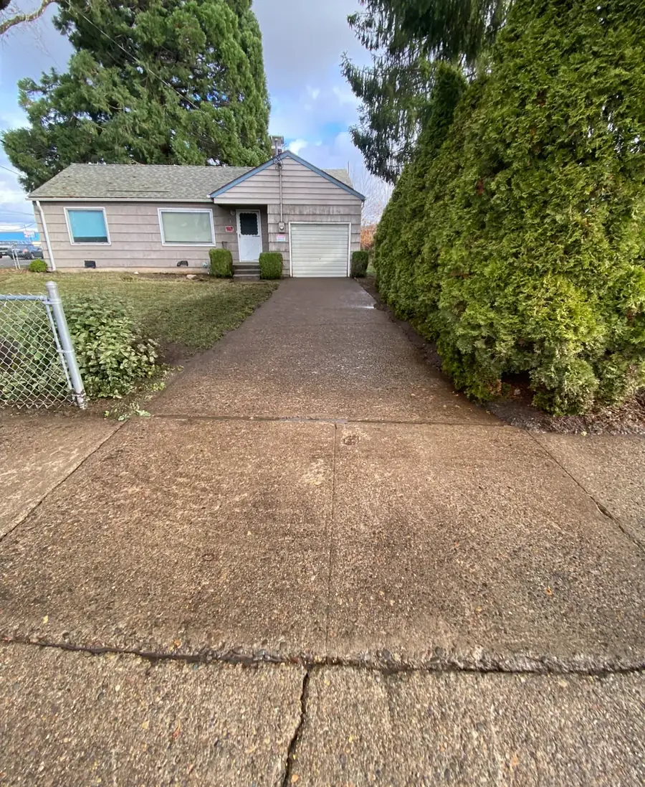
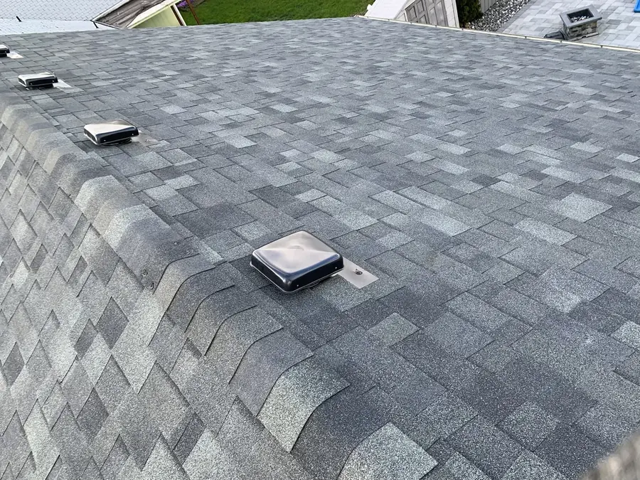
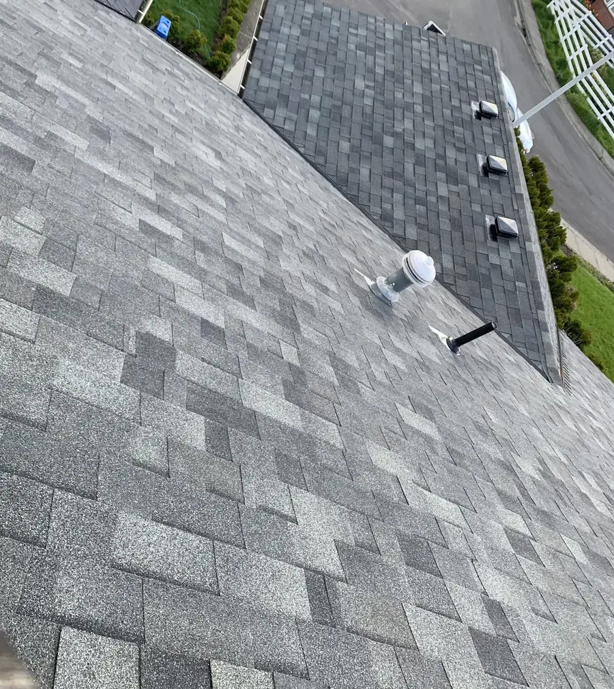
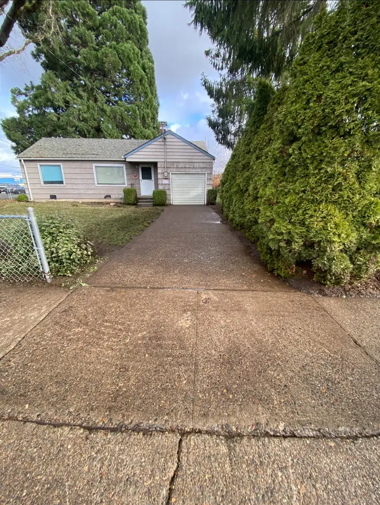
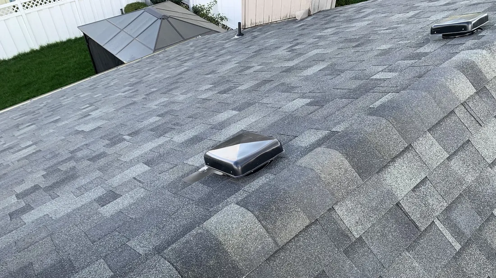
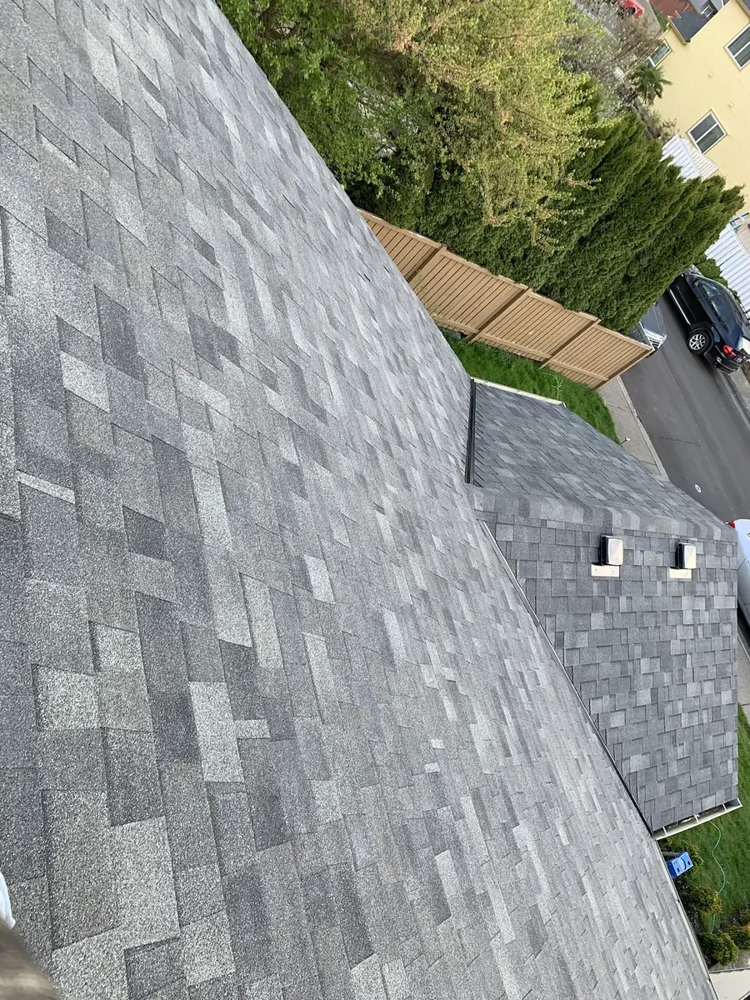

PDX Exterior, roof moss removal, gutter cleaning and pressure washing in Portland, Oregon
Portland metro · Oregon City based
Portland rain grows moss on everything. We take it off.
Nine months of wet weather is hard on a house. Moss creeps across the shingles, needles pack the gutters, and the driveway goes green and slick. PDX Exterior cleans all of it, and the guy who answers the phone is the guy on your roof.
-
01
Roof cleaning and moss removal
Moss holds water against your shingles and lifts their edges, which is how a roof that should last 25 years starts leaking at 15. We clear the moss, needles and leaf mats off the roof and out of the valleys, then leave the roof clean and draining the way it's supposed to.
-
02
Gutter cleaning
Fir needles and maple leaves fill a gutter fast. When it backs up, water pours over the edge and down your siding and foundation. We clear them out so the water runs to the downspouts again instead of over the edge.
-
03
Driveways, walkways and patios
Green, slippery concrete gets taken back to its real color with a surface cleaner that leaves an even finish instead of wand stripes. Driveways, front walks, back patios, steps and pool decks.
-
04
House and siding washing
Algae streaks, cobwebs and road grime come off the siding, eaves and trim. It's the fastest way to make a house look cared for, whether you're selling it or just tired of looking at the green on the north wall.
Real job, same walkway
Drag the line.
This walkway had a winter's worth of moss on it. Same house, same concrete, one visit later. Scroll and it washes itself, or grab the handle and drag it back and forth.
- 5.0Google rating
- 23five star reviews
- 7 daysa week, 7 to 7

Before AfterRoof work is risky. That's why you hire it out.
Every year people get hurt on ladders cleaning their own gutters. PDX Exterior shows up with the right gear and fall protection, works safely, and carries the risk so you don't have to. Daniel is background checked, and he explains what he's going to do before he starts.
- 1
Call or text
Tell us what's going on. A photo of the roof or driveway helps.
- 2
Free quote
You get a clear price before anything is scheduled.
- 3
We clean it
On time, with the work explained before it starts.
- 4
Pay how you like
Cash, check, Venmo or Zelle once you're happy with it.
Recent work around Portland.
All of these are our jobs. No stock photos.

Roof cleaning
Moss removal- House and drive

Walkway
Ridge and vents
Roof edge- Driveway
- Gutters
"They did an awesome job. Super friendly, and explained everything clearly before getting started. The roof looks way better now."
Eli, roof moss and gutters, Google review
"They cleaned my driveway and they removed all the moss and pressure washed it. I highly recommend them. 10/10!"
Bobby, driveway, Google review
"PDX Exterior did a wonderful job cleaning my roof and gutters. They did more than I expected."
Stephan K., roof and gutters, Google review
Based in Oregon City. Working all over Portland.
We're out of Oregon City and work the whole metro area, mostly on the south and east side. If you're not sure you're in range, call and ask. The answer is usually yes.
- Portland
- Oregon City
- West Linn
- Lake Oswego
- Milwaukie
- Gladstone
- Happy Valley
- Clackamas
- Tualatin
- Canby
- Every day
- 7 AM to 7 PM
- Payment
- Cash, check, Venmo, Zelle
Questions people ask first.
Do you remove moss from roofs?
Yes, it's the job we do most. The moss and debris come off the roof, and whatever falls into the gutters gets cleared out too.
Will pressure washing hurt my roof?
Roofs and concrete don't get cleaned the same way. Before anything starts, Daniel will tell you exactly how he plans to clean your roof and why, so there are no surprises.
How often should gutters be cleaned around Portland?
Most homes with trees nearby need it at least once a year, usually in late fall after the leaves and needles come down. Houses under big firs often need a second cleaning in spring.
How do I pay?
Cash, check, Venmo or Zelle.
How do I get a price?
Call or text (971) 204-3107, or send the form below. Quotes are free, and a couple of photos let us price it faster.
Get a free quote.
Call or text. You'll talk to the person who does the work.
(971) 204-3107- Hours
- 7 AM to 7 PM, seven days a week
- Based in
- Oregon City, OR, serving the Portland metro